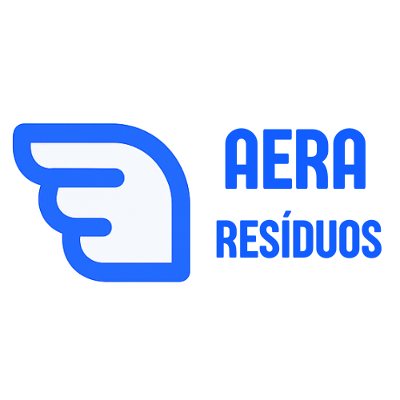

AERA Resíduos
Plataforma SaaS inteligente para rastreabilidade total, emissão de MTRs e otimização logística de ponta a ponta.
Transforme o controle dos seus resíduos. O AERA Resíduos é o software ideal para indústrias, construtoras, redes varejistas e franquias que precisam garantir a destinação correta e rastreável de 100% dos seus materiais, com total segurança jurídica.
O que a plataforma oferece:
- Rastreabilidade Completa (Blockchain-ready): Acompanhe o ciclo de vida do resíduo desde a geração até a destinação final com certificados integrados.
- Automação de MTRs e CDFs: Emissão automática de Manifestos de Transporte de Resíduos e Certificados de Destinação Final.
- Gestão de Fornecedores: Homologação sistêmica de transportadores e receptores com verificação de licenças ativas.
- Economia Circular na Prática: Inteligência de dados para identificar oportunidades de reuso, venda de sucata e redução de custos logísticos.
Por que assinar o AERA Resíduos?
Eliminamos a papelada e a vulnerabilidade da sua cadeia de suprimentos. Com o AERA Resíduos, você comprova facilmente a conformidade legal para auditorias e certificações ISO, transformando passivos em indicadores positivos para seu relatório de sustentabilidade.
Assuma o controle total dos seus resíduos.
Fale com nossa equipe e agende uma apresentação da plataforma.
Solicitar Demonstração no WhatsApp →